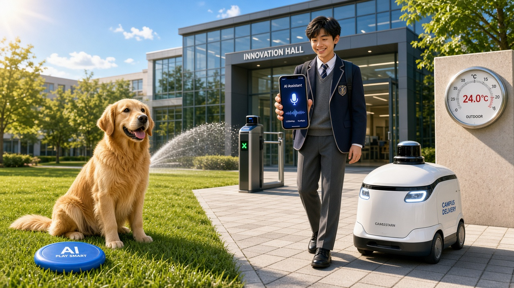

BILDEN EDU · 青少年 AI 创想营 · Youth AI Innovation Camp
AI 创想营
把好奇变成能力
01 · 辨智能从现实生活中认知智能
Definition & Recognition
02 · 探黑盒你发给 AI 的话都去了哪里
Physical Computing Journey
03 · 造 Agent一起构建我们自己的智能体
Living Agent Architecture
01 辨智能 · Interactive Poll
这张图里，哪些东西算智能？ Which of These Objects Possess Real Intelligence?

学生：飞书群发起投票，一人一票、可多选。老师：点图上的圆点，现场揭示答案。
01 智能定义 · Definition of Intelligence
环境再变，照样办得成 Goal Achievement Across Diverse Environments
Intelligence measures an agent's ability to achieve goals in a wide range of environments. · Shane Legg & Marcus Hutter, 2007
会输入、会输出，只是开始。恒温器也会测温度、会开关。真正拉开差距的是：环境变了，它还能不能把事情办成。
能感知 · perceive
世界模型 · world model
判断 · plan
行动 · act
学习 · learn
划重点懂得学习，并给出更优化的解决方案。learn, and produce better solutions
出处 · Russell & Norvig（perceive → model → plan → act），再加上 Shane Legg 强调的 learn。
01 能力边界 · Boundaries & Critical Thinking
它能帮忙，决定还是你来做 AI Assists, You Decide
这些它拿手 · AI Excels
列提纲，把一道题再出两道，翻译，陪你背单词，把笔记收短。
这些别交给它 · Keep Human
它没进过你们学校，也不认识你。你难过的时候，它不懂，只会顺着接话。
1
脑子自己用
作文让它写完你来抄，练的是它不是你
2
心事找人说
吵架、被孤立、跟爸妈闹，找真人
3
它会编事实
答案自己核对，密码和学号不贴进去
如果豆包说：「你们学校门口有 17 棵树。」你信吗？
为什么会这样？ 大模型做的事是概率预测下一个词，没有物理世界的感官，当不知道确切答案时会一本正经地编出听起来很流畅的假话（幻觉）。
这门课的台阶 · AI Capability Ladder
使用 AI 的五个台阶，今天停在第二级 5 Levels of AI Usage: Reaching Level 2 Today
L5 能自己做工具 · Tool Maker
L4 管得住数据和上线 · Systems & Safety
L3 做成别人能用的 · Solution Builder
L2 会搭自己的 Agent · 今日目标
L1 会用现成的 App · App User
- L5 Tool Maker 能改工具、写插件、参与开源，微调甚至训练自己的模型
- L4 Systems & Safety 知道什么该存、谁能看、怎么放到网上
- L3 Solution Builder 做成同学真的能用的小系统（后面几天走到这里）
- L2 Agent Architect · 今天 给它目标、记忆和技能，搭一个自己的 Agent
- L1 App User 打开豆包，提问、生图、做一段简单视频
从上往下读，左右是同一层。今天讲到 L2。校园寻物是往 L3 迈的第一步。
02 物理旅程 · Physical Journey of a Prompt
你给豆包发一句话，中间发生了什么 From Tap to Output: The 7-Step Physical Pipeline
豆包走国内网络，进字节跳动的机房。左边路径上的光点，就是这一句话在往下走。标了「实拍」的是真机房；标了「示意图」的是为了看清下钻，不是监控画面。点图可以放大。
02 实地航拍 · Physical Computing Infrastructure
一座机房，大得像一小块城 Massive Scale of Modern AI Data Centers
马斯克在孟菲斯修的那座 xAI Colossus
Grok 的机房叫 Colossus。他把一座旧工厂改成算力中心，旁边停着一排燃气轮机，专门给显卡供电。从天上拍，比左边还大一圈。
打开孟菲斯航拍 ↗
那组航拍是新闻照片，有版权，所以放不进课件。课堂上点开给大家看。
左边是谷歌在美国爱荷华的机房，无人机实拍。Chad Davis / CC BY 2.0。豆包的机房在国内，从天上望下去也是这种大厂房。
02 透视黑盒 · Inside the Transformer
进了机房，它怎么算出下一个词 Next-Token Prediction & Self-Attention
01
Token 分词字被切成小块，叫做 token
上图来自开源项目 Transformer Explainer（Georgia Tech Polo Club，MIT License）。课堂上打开原站，由老师操作：poloclub.github.io/transformer-explainer ↗。全班只盯一件事：它在挑下一个词，不是在查你们学校。
02 语义空间几何 · Semantic Vector Space
在它眼里，有的词很近，有的词很远 Words with Similar Contexts Cluster Together in Embedding Space
相似度 0.57
🔬 课堂探究实验 · Guided Tests
📐 实时空间测距透视 · Distance Insight
等待测距
大模型在机房里不看字面意思，而是计算词坐标之间的几何夹角。
坐标来自简体中文语义向量降维投影。核心认知：两个词意思相反（如开心/难过），在空间中依然很近，因为句式结构高度一致；模型没有情感体验，只计算向量夹角。
知识巩固 · Key Concept Matcher
这些核心概念，我们都见过了 Connecting Concepts to Practical Meanings
点左边一个词，再点右边一句解释。
03 核心架构 · Anatomy of an AI Agent
真正的智能体在中间，周围才是它的零件 The 5 Core Components of an Agent Loop
Agent
真智能体
点一个零件。会聊天的只是大脑。真正的智能体还要记得住、做得到、知道自己的目标，并且知道什么绝不能做。
03 老师示范 · Teacher's Real-World Agents
我自己用的 Agent，拆开就是这五个零件 Deconstructing 3 Practical Personal Agents
资讯早报 · 先把这一个讲透 Daily News Briefing Agent
目标 Goal每个上学日早上，给我 3 条和我有关的事
记忆 Memory我关心课程、学校通知，不关心娱乐八卦
技能 Skills去查真实网页，每条都要带可靠来源
大脑 LLM Brain把查到的写成我能扫一眼就懂的话
审批代表 Approval Assistant
它按我的规则把待办整理好，点不点头仍然是我。你们可以做：请假条先写成草稿，自己交。
差旅预定 Travel Assistant
它排行程、对时间。你们可以做：周末出门清单，几点出门、带什么。决定仍然是你。
演示平台：老师在 豆包工作 里搭这些 Agent，放进 飞书群聊 里跑起来。今天你们也这么干。
03 课堂实操 · Live Agent Practice
校园寻物：这才算真正的智能体 Building a Campus Lost & Found Agent
会聊天的豆包，说完就忘。这个寻物 Agent 有目标（帮两边对上）、有记忆（记下失物和拾物）、有技能（比对并通知）。对不上，它必须说不知道。
目标 Goal记忆 Memory技能 Skill说明书 Spec大脑 Brain
记忆还是空的。先登记一件失物，再登记一件拾物。
课后任务 · Tomorrow's Mission Card
明天，带一个真问题来 Define a Real Problem for Your First Agent